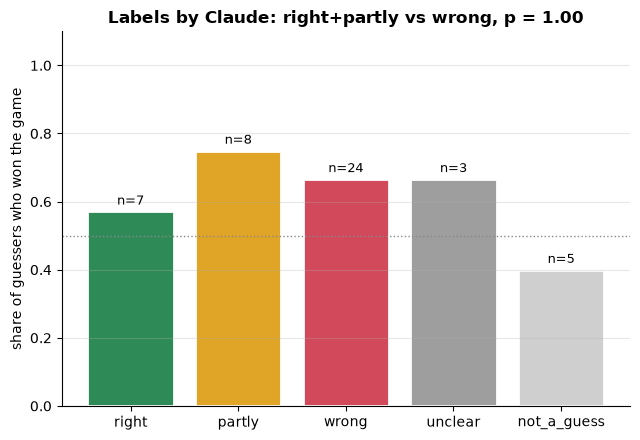
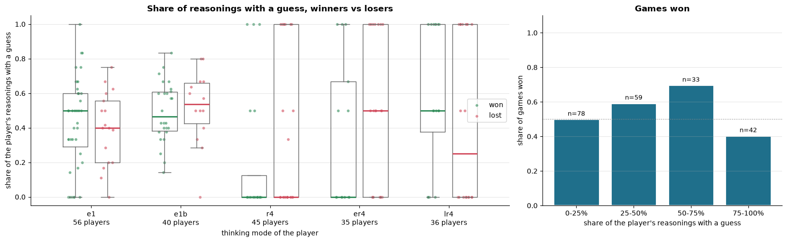
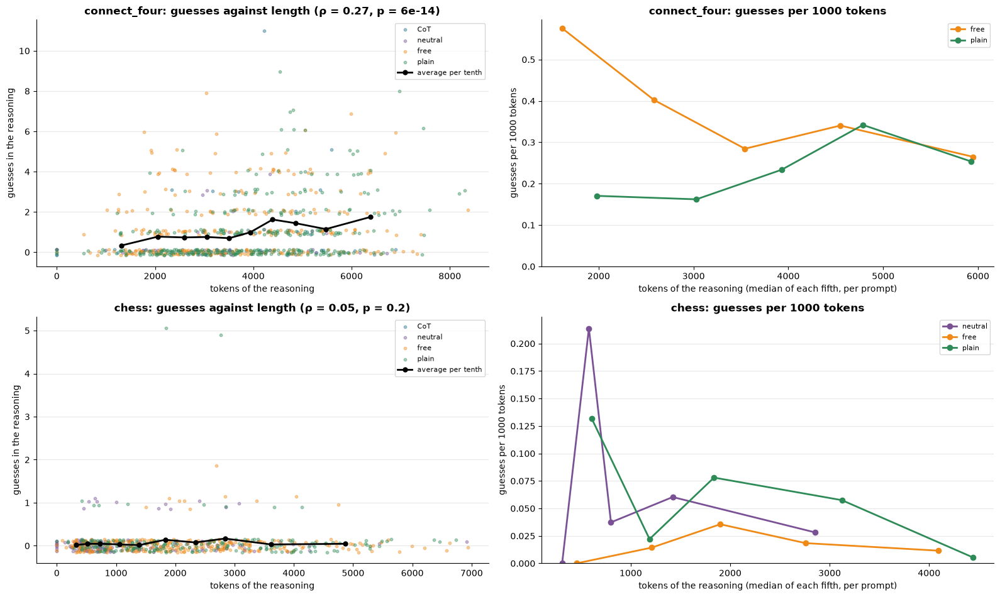
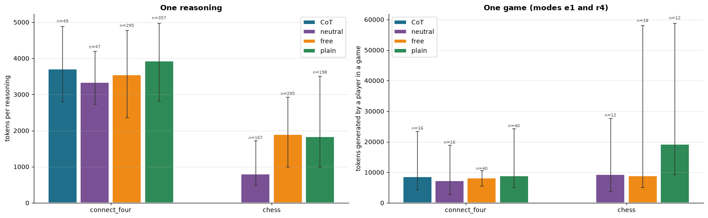

From cooking to chess and Connect Four: the same thinking modes, an opponent that reacts, and the model playing against itself.
Qwen3 · vLLM benchmark · 26 – 29 October 2026
0, e1, r4, er4, lr4) play differently when the world fights back?| mode | thinks | keeps its reasonings |
|---|---|---|
0 | never | – |
e1 | every move | none (ephemeral) |
r4 | ~every 4 moves | all |
er4 | ~every 4 moves | none |
lr4 | ~every 4 moves | the last one |
l1 new | every move | the previous one |
Chess (python-chess): board as ASCII, legal moves listed, SAN or UCI answers accepted.
Connect Four: 6×7, answer a column number. Simpler board, explicit threats.
Legal moves are listed like TextWorld's admissible commands: otherwise we would measure notation, not play.
random, greedy (one move ahead), Stockfish sf<N> / elo<N>
self-<mode>: the same model in a second, separate context, with its own mode.
Score: win 1 · draw 0.5 · loss 0. Colours alternate with the seed.
The record (result, moves, illegal, tokens…), and next to it:
.transcript.md: both players' reasonings move by move, to read side by side.
.thoughts.jsonl: the same as data, for the analysis.
Files: duel_games.py, duel.py, duel_prompts.py, run_duel.py, adjudicate.py, colab_duel.ipynb, grids duel_*.yaml, tests/test_duel.py
A game stopped at max_steps is a draw on the board even if one side is far ahead. Stockfish (depth 16) evaluates the final position: ≥ 3 pawns ahead wins. The board result is kept too.
The first self-play game was a draw by repetition with White about 15 pawns down. Win/draw/loss hides how a game went, so the final evaluation is saved for every game.
Postponed for a later experiment: a side question ("what will your opponent play?") asked and then removed from the context.
X, ply 5: "since the opponent just played in column 3, maybe they are trying to block me"
O, ply 4 (its own reasoning): "the best move is to block X's potential vertical line in column 3"
right Unprompted, and exactly what O intended.
| prompt | what the model reads on a thinking turn | mentions the opponent? |
|---|---|---|
| CoT | 3 steps: evaluate material, king safety and what your opponent's last move threatens; candidates + your opponent's best reply; check legality | yes, asks about it |
| neutral | The same 3 steps without the opponent: "Evaluate the position. List 2 or 3 candidate moves and compare them…", "be concise and brief" | no, but structured |
| free | "Think about the game, then say your move." System prompt without "the user". | no |
| plain | Nothing: the board message plus the /think switch. The model's own default thinking. | no |
Same sampling for all four, so only the prompt changes. A test fails if neutral, free or plain contain "opponent", "threat" or "other player", or if free/plain contain steps, "brief", "evaluate", "user".
Your question that started this: "isn't neutral steering it against the possibility?" The structure was a real candidate cause.
| Qwen3-4B, chess self-play | neutral | free |
|---|---|---|
| words per reasoning (median) | 569 | 1357 |
| starts "The user is playing as…" | 91% | 28% |
| reasonings dominated by board reading | 8/167 | 43/228 |
| "Wait" per reasoning (median) | 3 | 14 |
| sentences about opponent intentions | 2.2‰ | 1.1‰ |
Less structure → longer reasonings, but the extra length goes into rebuilding the board square by square, not into the opponent.
"the queen is on d1? Wait, no. The queen is on d1. The white queen is on d1? Wait, no…"a neutral reasoning that loops for thousands of words
Black: "But why would White play Be6? Maybe to attack the Black king or to develop."White's own reason: "develop the Bishop and support the center". One of the rare good guesses.
Reading: at 4B the bottleneck in chess is understanding the position, not the prompt.
1. End only on the automatic rules (fivefold, 75 moves), so games reach max_steps and get adjudicated.
2. Adjudicate repetition draws too.
3. Show the move history: the models only see the current board and may not notice they are repeating.
Keyword pattern ("O / the opponent / they is trying to, aiming, planning, setting up, building…"). Free/plain: 50 games each; CoT/neutral: 8 each.
40 game sides per mode; dashed line = an even result. All games end in four in a row; first player wins 45/100.
l1: every move, keeps the previous reasoning in view.0 / 578
e1 reasonings that check an earlier expectation: "I expected O to…", "as predicted", "O did not block as…".
The model guesses what the opponent wants but never checks whether the guess came true. Consistent with Qwen3 being trained with past thinking stripped from the conversation.
Still to run: grids/duel_c4_l1.yaml (40 games of l1).
Each guess is paired with the opponent's own reasoning on the move guessed about (labels/guess_pairs.csv: 375 reasonings with guesses, 202 checkable).
right the main guess matches the opponent's reason
partly right kind of plan, wrong detail, or the right one is not the main guess
wrong a different reason (blocking ≠ attacking, or no plan at all)
unclear no readable reason / too vague not a guess not about the opponent
$ python label.py [1/50] connect_four, free, seed 2 | guesser O, ply 6 Board the guesser saw ... GUESSER >>> "...maybe they are trying to..." OPPONENT ...end of its reasoning... label [r]ight [p]artly [w]rong [u]nclear [n]ot a guess
Of the 44 real guesses: 16% right, 18% partly, 57% wrong.
O: "the user's previous moves were in column 2, so maybe they are trying to create a vertical line in column 2"Column 2 is O's own. "The user" = O. Counted by the pattern as a guess about X.
| work | what it does |
|---|---|
| Strat-Reasoner (2026) | Qwen3-4B, forced OpponentIntent / Prediction fields, scored against the opponent's reasoning, used as an RL reward |
| EMO, SOM | explicit opponent models, built on purpose |
| Observer, Not Player | the model only watches and predicts a strategy |
| TextArena, SPIRAL, GTBench, … | game scores and illegal moves, not what the reasoning contains |
| Danger of Overthinking | long reasoning hurts agents |
| Kosinski (2023) | "spontaneous" theory of mind, on false-belief tests |
≈ 0.34
"partial", close to "inconsistent" (band midpoints, 40 guesses, unverified labels).
| happens without being asked | 45–54% of C4 reasonings |
| right / at least partly | 16% / 34% |
| self/other confusion | 12% |

One bar per label of the 50 guesses. Height = the share of those guessers who won their game; n = guesses with that label. Dotted line = an even result (0.5).
If guessing right helped, the green bar would be the tallest.

Left: every dot is one player in one Connect Four self-play game (212 in all). Height = the share of its reasonings with a guess about the opponent. Green = it won, red = it lost; boxes show the middle half, the line the median. Split by thinking mode, so the mode, which decides much of the result, is held fixed.
Right: players grouped by how often they guess; height = the share of games they won.

Left: every dot is one reasoning, by length (tokens) and number of guesses it contains, coloured by prompt. Black line = the average in each tenth of the lengths. ρ = Spearman correlation.
Right: guesses per 1000 tokens, by length. A flat line means the guesses just come with the extra words; a rising line would mean long reasonings are more "about the opponent".

Left: length of one reasoning (thinking tokens), per prompt and game. Right: tokens one player generates in a whole game, only modes e1 and r4 (played with every prompt), so the prompts are compared on the same games.
Bars = median; whiskers = the middle half (25–75%); n = reasonings (left) or player-games (right): each self-play game counts twice, once for each side, if that side played in mode e1 or r4. No CoT bar in chess: CoT was only run against the bots there.
"Okay, let's see. The user is playing Connect Four, and I need to figure out the best move for O."O, describing itself. 60% of plain reasonings and a third of free ones start like this.
Check the 50 labels by hand (label.py + claude_labels.csv), compute Cohen's kappa, then label the rest.
Run l1 (grids/duel_c4_l1.yaml, 40 games): does memory change the guesses?
Decide the repetition rule in chess, then rerun.
Prompted vs unprompted: give the untrained model Strat-Reasoner's fields and score them with the same rubric.
Tighten the pattern: drop "the user / they" sentences that refer to the guesser's own colour.
MCTS opponent for Connect Four, to compare game scores with Strat-Reasoner.
Larger model (8B): more opponent modelling, less board confusion?
Friend + player: an external third-person advisor and an internal first-person player (slide 20).
Later: the side-question probe ("what will your opponent play?", then removed from the context).